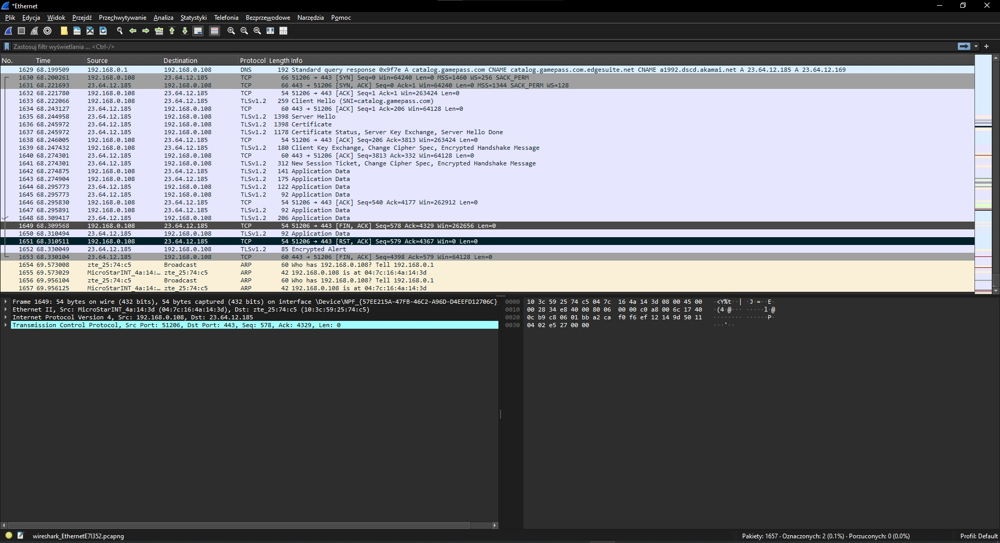
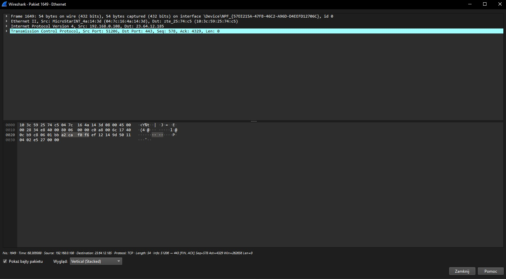

Funkcje
- Przechwytywanie pakietów sieciowych w czasie rzeczywistym oraz ich analiza i filtrowanie.
- Głęboka inspekcja pakietów DPI (Deep Packet Inspection) - wyświetlanie nagłówków pakietów oraz
dekodowanie ich zawartości.
- Kolorowanie pakietów - ułatwia identyfikacje różnych typów pakietów wraz z możliwością generowania wykresów
i raportów przedstawiających ruch sieciowy w rożnych przedziałach czasowych.
- Automatyczna interpretacja popularnych protokołów takich jak HTTP, DNS czy VoIP poprzez wbudowany dekoder, przedstawiając ich zawartość w czytelnie ułożonej strukturze,
co przyspiesza proces analizy ruchu sieciowego.

Zdjęcie widoku przechwytywania pakietów wiresharka

Wykonane przez: Kacper Breza i Łukasz Drozdowski